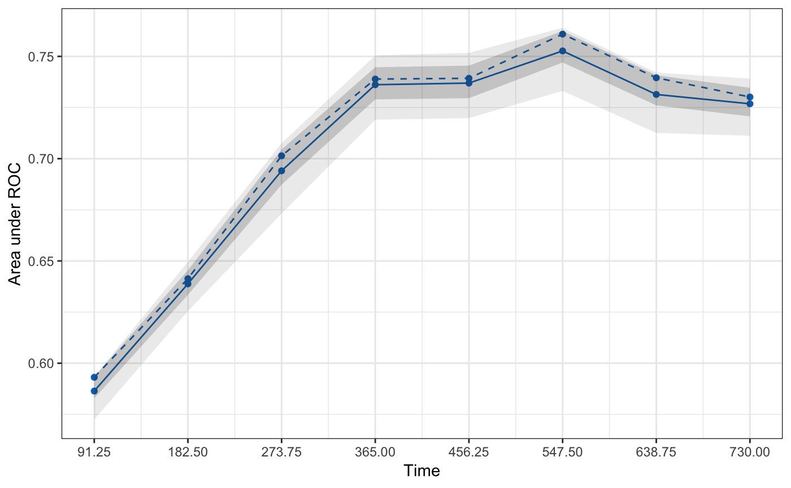
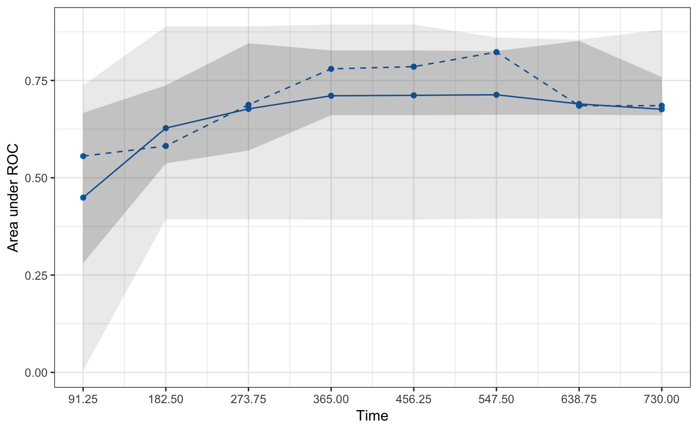
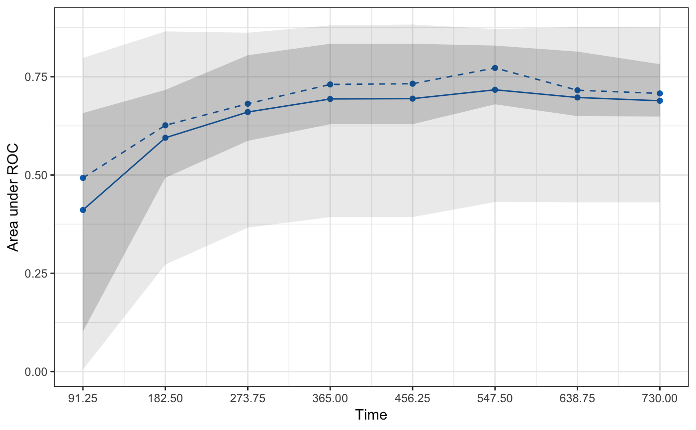

R/3-1-validate.R
hdnom.validate.RdValidate High-Dimensional Cox Models with Time-Dependent AUC
hdnom.validate(x, time, event, model.type = c("lasso", "alasso", "flasso", "enet", "aenet", "mcp", "mnet", "scad", "snet"), alpha, lambda, pen.factor = NULL, gamma, lambda1, lambda2, method = c("bootstrap", "cv", "repeated.cv"), boot.times = NULL, nfolds = NULL, rep.times = NULL, tauc.type = c("CD", "SZ", "UNO"), tauc.time, seed = 1001, trace = TRUE)
| x | Matrix of training data used for fitting the model; on which to run the validation. |
|---|---|
| time | Survival time.
Must be of the same length with the number of rows as |
| event | Status indicator, normally 0 = alive, 1 = dead.
Must be of the same length with the number of rows as |
| model.type | Model type to validate. Could be one of |
| alpha | Value of the elastic-net mixing parameter alpha for
|
| lambda | Value of the penalty parameter lambda to use in the model fits on the resampled data. From the built Cox model. |
| pen.factor | Penalty factors to apply to each coefficient. From the built adaptive lasso or adaptive elastic-net model. |
| gamma | Value of the model parameter gamma for MCP/SCAD/Mnet/Snet models. |
| lambda1 | Value of the penalty parameter lambda1 for fused lasso model. |
| lambda2 | Value of the penalty parameter lambda2 for fused lasso model. |
| method | Validation method.
Could be |
| boot.times | Number of repetitions for bootstrap. |
| nfolds | Number of folds for cross-validation and repeated cross-validation. |
| rep.times | Number of repeated times for repeated cross-validation. |
| tauc.type | Type of time-dependent AUC.
Including |
| tauc.time | Numeric vector. Time points at which to evaluate the time-dependent AUC. |
| seed | A random seed for resampling. |
| trace | Logical. Output the validation progress or not.
Default is |
Chambless, L. E. and G. Diao (2006). Estimation of time-dependent area under the ROC curve for long-term risk prediction. Statistics in Medicine 25, 3474--3486.
Song, X. and X.-H. Zhou (2008). A semiparametric approach for the covariate specific ROC curve with survival outcome. Statistica Sinica 18, 947--965.
Uno, H., T. Cai, L. Tian, and L. J. Wei (2007). Evaluating prediction rules for t-year survivors with censored regression models. Journal of the American Statistical Association 102, 527--537.
library("survival") # Load imputed SMART data data(smart) x <- as.matrix(smart[, -c(1, 2)])[1:500, ] time <- smart$TEVENT[1:500] event <- smart$EVENT[1:500] y <- Surv(time, event) # Fit penalized Cox model with lasso penalty fit <- hdcox.lasso(x, y, nfolds = 5, rule = "lambda.1se", seed = 11) # Model validation by bootstrap with time-dependent AUC # Normally boot.times should be set to 200 or more, # we set it to 3 here only to save example running time. val.boot <- hdnom.validate( x, time, event, model.type = "lasso", alpha = 1, lambda = fit$lasso_best_lambda, method = "bootstrap", boot.times = 3, tauc.type = "UNO", tauc.time = seq(0.25, 2, 0.25) * 365, seed = 1010 )#> Start bootstrap sample 1 #> Start bootstrap sample 2 #> Start bootstrap sample 3# Model validation by 5-fold cross-validation with time-dependent AUC val.cv <- hdnom.validate( x, time, event, model.type = "lasso", alpha = 1, lambda = fit$lasso_best_lambda, method = "cv", nfolds = 5, tauc.type = "UNO", tauc.time = seq(0.25, 2, 0.25) * 365, seed = 1010 )#> Start fold 1 #> Start fold 2 #> Start fold 3 #> Start fold 4 #> Start fold 5# Model validation by repeated cross-validation with time-dependent AUC val.repcv <- hdnom.validate( x, time, event, model.type = "lasso", alpha = 1, lambda = fit$lasso_best_lambda, method = "repeated.cv", nfolds = 5, rep.times = 3, tauc.type = "UNO", tauc.time = seq(0.25, 2, 0.25) * 365, seed = 1010 )#> Start repeat round 1 fold 1 #> Start repeat round 1 fold 2 #> Start repeat round 1 fold 3 #> Start repeat round 1 fold 4 #> Start repeat round 1 fold 5 #> Start repeat round 2 fold 1 #> Start repeat round 2 fold 2 #> Start repeat round 2 fold 3 #> Start repeat round 2 fold 4 #> Start repeat round 2 fold 5 #> Start repeat round 3 fold 1 #> Start repeat round 3 fold 2 #> Start repeat round 3 fold 3 #> Start repeat round 3 fold 4 #> Start repeat round 3 fold 5#> High-Dimensional Cox Model Validation Object #> Random seed: 1010 #> Validation method: bootstrap #> Bootstrap samples: 3 #> Model type: lasso #> glmnet model alpha: 1 #> glmnet model lambda: 0.0466592 #> glmnet model penalty factor: not specified #> Time-dependent AUC type: UNO #> Evaluation time points for tAUC: 91.25 182.5 273.75 365 456.25 547.5 638.75 730summary(val.boot)#> Time-Dependent AUC Summary at Evaluation Time Points#> 91.25 182.5 273.75 365 456.25 547.5 638.75 #> Mean 0.5863973 0.6388084 0.6940715 0.7361496 0.7369492 0.7526686 0.7313955 #> Min 0.5725253 0.6254951 0.6732301 0.7190563 0.7198521 0.7331468 0.7125985 #> 0.25 Qt. 0.5828283 0.6334186 0.6873095 0.7289823 0.7295652 0.7470190 0.7260707 #> Median 0.5931313 0.6413422 0.7013889 0.7389083 0.7392782 0.7608911 0.7395429 #> 0.75 Qt. 0.5933333 0.6454650 0.7044922 0.7446963 0.7454978 0.7624295 0.7407940 #> Max 0.5935354 0.6495879 0.7075956 0.7504843 0.7517173 0.7639680 0.7420452 #> 730 #> Mean 0.7268279 #> Min 0.7111940 #> 0.25 Qt. 0.7206682 #> Median 0.7301424 #> 0.75 Qt. 0.7346448 #> Max 0.7391472plot(val.boot)#> High-Dimensional Cox Model Validation Object #> Random seed: 1010 #> Validation method: k-fold cross-validation #> Cross-validation folds: 5 #> Model type: lasso #> glmnet model alpha: 1 #> glmnet model lambda: 0.0466592 #> glmnet model penalty factor: not specified #> Time-dependent AUC type: UNO #> Evaluation time points for tAUC: 91.25 182.5 273.75 365 456.25 547.5 638.75 730summary(val.cv)#> Time-Dependent AUC Summary at Evaluation Time Points#> 91.25 182.5 273.75 365 456.25 547.5 638.75 #> Mean 0.4490416 0.6276203 0.6770072 0.7106572 0.7117936 0.7132444 0.6897143 #> Min 0.0050000 0.3933210 0.3933210 0.3922146 0.3922146 0.3952018 0.3952018 #> 0.25 Qt. 0.2806122 0.5368850 0.5699402 0.6606853 0.6606853 0.6618871 0.6618871 #> Median 0.5555556 0.5816327 0.6874550 0.7797651 0.7854475 0.8229455 0.6852079 #> 0.75 Qt. 0.6666667 0.7373737 0.8454310 0.8270039 0.8270039 0.8256986 0.8516541 #> Max 0.7373737 0.8888889 0.8888889 0.8936170 0.8936170 0.8604890 0.8546209 #> 730 #> Mean 0.6760083 #> Min 0.3952018 #> 0.25 Qt. 0.6605362 #> Median 0.6852079 #> 0.75 Qt. 0.7586751 #> Max 0.8804204plot(val.cv)# repeated cv provides similar results as k-fold cv # but more robust than k-fold cv print(val.repcv)#> High-Dimensional Cox Model Validation Object #> Random seed: 1010 #> Validation method: repeated cross-validation #> Cross-validation folds: 5 #> Cross-validation repeated times: 3 #> Model type: lasso #> glmnet model alpha: 1 #> glmnet model lambda: 0.0466592 #> glmnet model penalty factor: not specified #> Time-dependent AUC type: UNO #> Evaluation time points for tAUC: 91.25 182.5 273.75 365 456.25 547.5 638.75 730summary(val.repcv)#> Note: for repeated CV, we evaluated quantile statistic tables for #> each CV repeat, then calculated element-wise mean across all tables. #> Time-Dependent AUC Summary at Evaluation Time Points#> 91.25 182.5 273.75 365 456.25 547.5 #> Mean of Mean 0.4110255 0.5947489 0.6602650 0.6935310 0.6943499 0.7168395 #> Mean of Min 0.0050000 0.2722419 0.3660709 0.3929950 0.3929950 0.4313606 #> Mean of 0.25 Qt. 0.1019381 0.4929796 0.5870563 0.6293811 0.6293811 0.6799879 #> Mean of Median 0.4926132 0.6265117 0.6813951 0.7305041 0.7323214 0.7724233 #> Mean of 0.75 Qt. 0.6575964 0.7165816 0.8047040 0.8340981 0.8340981 0.8293120 #> Mean of Max 0.7979798 0.8654296 0.8620988 0.8806766 0.8829538 0.8711139 #> 638.75 730 #> Mean of Mean 0.6972944 0.6889331 #> Mean of Min 0.4305650 0.4305650 #> Mean of 0.25 Qt. 0.6498740 0.6488383 #> Mean of Median 0.7156659 0.7076146 #> Mean of 0.75 Qt. 0.8139573 0.7821154 #> Mean of Max 0.8764099 0.8755320plot(val.repcv)# # Test fused lasso, SCAD, and Mnet models ### # library("hdnom") # library("survival") # # # Load imputed SMART data # data(smart) # x = as.matrix(smart[, -c(1, 2)])[1:500,] # time = smart$TEVENT[1:500] # event = smart$EVENT[1:500] # y = Surv(time, event) # # set.seed(1010) # val.boot = hdnom.validate( # x, time, event, model.type = "flasso", # lambda1 = 5, lambda2 = 2, # method = "bootstrap", boot.times = 10, # tauc.type = "UNO", tauc.time = seq(0.25, 2, 0.25) * 365, # seed = 1010) # # val.cv = hdnom.validate( # x, time, event, model.type = "scad", # gamma = 3.7, alpha = 1, lambda = 0.05, # method = "cv", nfolds = 5, # tauc.type = "UNO", tauc.time = seq(0.25, 2, 0.25) * 365, # seed = 1010) # # val.repcv = hdnom.validate( # x, time, event, model.type = "mnet", # gamma = 3, alpha = 0.3, lambda = 0.05, # method = "repeated.cv", nfolds = 5, rep.times = 3, # tauc.type = "UNO", tauc.time = seq(0.25, 2, 0.25) * 365, # seed = 1010) # # print(val.boot) # summary(val.boot) # plot(val.boot) # # print(val.cv) # summary(val.cv) # plot(val.cv) # # print(val.repcv) # summary(val.repcv) # plot(val.repcv)